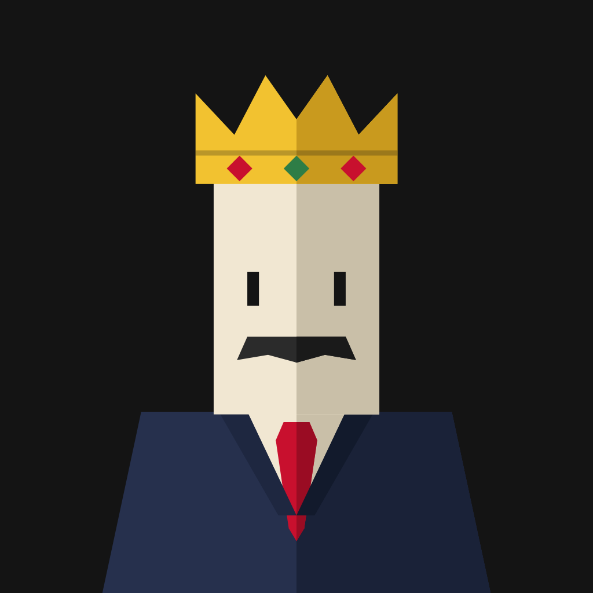

Gizlilik Politikası
Kongre: Başkanın Koltuğu · Privacy Policy
Gizlilik Politikası
Son güncelleme: 12 Kasım 2026
Özet
Kongre bir kart oyunudur. Hesap açmanızı istemez; adınızı, e-postanızı veya telefon numaranızı toplamaz.
Oyun verileri yalnızca cihazınızda
Başkan adı, kulüp adı ve renkleri, oyun kaydı, kulüp tarihi, kupalar, başarımlar ve ayarlar yalnızca cihazınızın yerel depolamasında tutulur. Bu veriler bize veya üçüncü taraflara gönderilmez. Uygulamayı silerseniz veya Ayarlar’dan “Kulübü tamamen sıfırla”yı seçerseniz silinir.
İnternet bağlantısı
Oyunu oynamak için internet bağlantısı gerekir. Uygulama yalnızca bağlantının olup olmadığını kontrol eder; bu kontrol sırasında oyun verileriniz gönderilmez.
Reklamlar
Oyun ücretsizdir ve reklamlar Google AdMob tarafından sunulur: her birkaç maçta bir maç sonrasında tam ekran reklam çıkar; başkanınız düştüğünde isterseniz reklam izleyip oyuna devam edebilirsiniz. Google reklam göstermek için reklam kimliği, cihaz bilgisi, IP adresinden tahmini konum ve reklamlarla etkileşim gibi verileri işleyebilir. Avrupa Ekonomik Alanı, Birleşik Krallık ve İsviçre’deki kullanıcılardan Google’ın rıza formuyla izin istenir; iOS’ta takip izni App Tracking Transparency penceresiyle sorulur. İzin vermezseniz kişiselleştirilmemiş reklamlar gösterilir ve oyun normal çalışır. Rızanızı Ayarlar > Reklamlar > Reklam gizlilik tercihleri bölümünden değiştirebilir, iOS takip iznini iPhone Ayarlar > Gizlilik ve Güvenlik > Takip bölümünden yönetebilirsiniz. Kumar ve bahis reklamları kapalıdır. Google’ın veri kullanımı: policies.google.com/technologies/partner-sites
Çocuklar
Oyun 13 yaş altındaki çocuklara yönelik değildir ve bilerek çocuklardan veri toplamaz.
Değişiklikler ve iletişim
Bu politika değişirse güncel metin uygulamada ve bu sayfada yayımlanır. Sorularınız için: tuncturkoglu000@gmail.com
Privacy Policy
Last updated: 12 November 2026
Summary
Kongre is a card game. It does not ask you to create an account and does not collect your name, email or phone number.
Game data stays on your device
Your president name, club name and colours, saved game, club history, trophies, achievements and settings are stored only in your device’s local storage. This data is not sent to us or to third parties. It is deleted if you uninstall the app or choose “Reset the club completely” in Settings.
Internet connection
An internet connection is required to play. The app only checks whether a connection is available; no game data is sent during this check.
Ads
The game is free and ads are served by Google AdMob: every few matches a full-screen ad appears after a match, and when your president falls you can choose to watch an ad to carry on. To show ads, Google may process data such as the advertising ID, device information, approximate location from your IP address and interactions with ads. Users in the European Economic Area, the United Kingdom and Switzerland are asked for consent through Google’s consent form; on iOS tracking permission is requested through the App Tracking Transparency prompt. If you decline, non-personalised ads are shown and the game works normally. You can change your consent under Settings > Ads > Ad privacy choices, and manage iOS tracking permission under iPhone Settings > Privacy & Security > Tracking. Gambling and betting ads are turned off. How Google uses data: policies.google.com/technologies/partner-sites
Children
The game is not directed at children under 13 and does not knowingly collect data from children.
Changes and contact
If this policy changes, the updated text will be published in the app and on this page. For questions: tuncturkoglu000@gmail.com